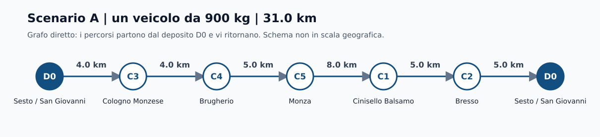
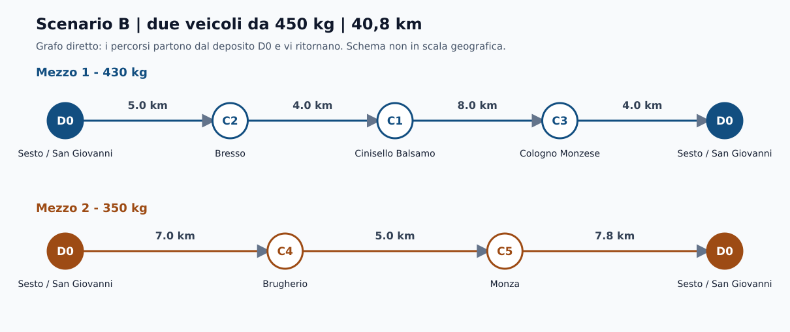

Definire la rete
Sei nodi, una matrice direzionale e una quantità da consegnare per ciascun cliente.
Un confronto concreto fra un furgone capiente e due mezzi leggeri per organizzare le consegne di prodotti da forno nell'area nord-est di Milano.
PaneLinea Nord Milano è un'impresa simulata che distribuisce pane, focacce e prodotti da forno confezionati a negozi alimentari e piccoli esercizi di ristorazione.
La giornata tipo prevede cinque consegne, con partenza e rientro presso un deposito situato nel comune di Sesto San Giovanni. Il problema consiste nel trovare i giri con la minore percorrenza complessiva, rispettando il carico massimo dei veicoli.
Sei nodi, una matrice direzionale e una quantità da consegnare per ciascun cliente.
Enumerazione completa delle sequenze e delle ripartizioni fra veicoli, con controllo delle capacità.
Confronto di chilometri, tempi e costi, anche al variare dei prezzi unitari.
Le distanze sono tratte da itinerari stradali pubblicati fra i centri urbani. I valori sono direzionali: il tragitto di andata può avere una lunghezza diversa dal ritorno.
Le quantità e le caratteristiche operative costituiscono l'istanza del caso aziendale simulato.
| Codice | Località | Merce |
|---|
900 kg di capacità · € 105/giorno · € 0,69/km
450 kg ciascuno · € 58/giorno ciascuno · € 0,52/km
Valori in chilometri; ogni riga rappresenta il nodo di partenza, ogni colonna il nodo di arrivo. D0 = Sesto San Giovanni; C1 = Cinisello Balsamo; C2 = Bresso; C3 = Cologno Monzese; C4 = Brugherio; C5 = Monza.
Il codice Python confronta tutte le sequenze possibili per il veicolo unico. Per i due veicoli, esamina le ripartizioni non equivalenti e scarta quelle che superano la capacità di 450 kg per mezzo.
L'obiettivo è ridurre la distanza complessiva, non il costo: la valutazione economica viene effettuata successivamente, a parità di percorsi ottimi trovati.
Un unico giro · carico 780 su 900 kg

Due giri simultanei · 430 kg + 350 kg

I grafi illustrano l'ordine delle fermate e le distanze direzionali rilevate; non rappresentano la forma geografica della rete viaria.
Un furgone percorre meno chilometri e richiede un solo noleggio. Due mezzi, lavorando contemporaneamente, terminano prima le consegne ma comportano più ore-autista complessive.
Modifica i prezzi qui sotto: la pagina ricalcola i costi senza cambiare i percorsi, le distanze o la capacità dei mezzi.
Noleggio, costo chilometrico e ore-autista sommate.
Due noleggi; tempi dei mezzi conteggiati separatamente per il costo.
di differenza economica a favore del furgone unico.
Il chilometraggio rimane quello minimo calcolato con enumerazione completa.
Tariffa chilometrica A alla quale i due costi si equivalgono, mantenendo ferme le altre tariffe correnti.
La linea B rimane orizzontale rispetto a questa variabile. L'incrocio indica quando cambia la scelta economica.
Il costo B varia per entrambi i mezzi; la linea A rimane costante rispetto a questo prezzo.
Le tariffe operative sono parametri dell'impresa simulata. L'analisi non modifica i percorsi ottimi: esamina la convenienza economica delle due soluzioni già determinate.
La matrice contiene 30 distanze direzionali tra i sei centri urbani, ricavate da servizi di itinerari stradali. Le fonti consultate sono disponibili in un file dedicato.
I costi derivano dalle formule e dai parametri dell'istanza. I percorsi sono stati individuati dal programma Python mediante enumerazione completa, senza euristiche.
Quantità, matrice direzionale, caratteristiche dei veicoli e documentazione delle percorrenze.
Scarica l'istanza JSON Scarica le 30 fonti CSVSequenze ottime dei giri, carichi, chilometri, tempi e conteggi delle combinazioni esaminate.
Scarica i risultati JSONTariffe, costi dei due scenari, confronto di convenienza e valori delle soglie di pareggio.
Scarica l'analisi JSONAmbito delle distanze. I chilometri rappresentano itinerari stradali pubblicati tra centri urbani; i punti di consegna sono simulati e non corrispondono a indirizzi commerciali specifici. La matrice mantiene distinti andata e ritorno. Rilevazione: 21 novembre 2026.